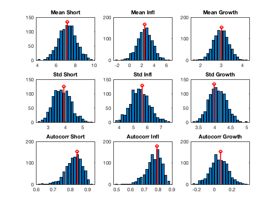

Monte-Carlo Stochatic Simulations
Draw random time series from the model distribution, and compare their sample properties against the unconditional model-implied ones. In this exercise, a calibrated model (and no actual data) is used to both generate the random data samples as well as to calculate calculate asymptotic statistics.
Contents
- Dependencies
- Clear Workspace
- Load Solved Model
- Define Dates
- Set Standard Deviations of Shocks
- Draw Random Time Series from Model Distribution
- Re-Simulate Data
- Compute Sample Properties of Simulated Time Series
- Compute Corresponding Asymptotic Properties Analytically
- Plot Sample and Asymptotic Properties
- Show Variables and Objects Created in This File
Dependencies
Run the following m-files before this one:
Clear Workspace
Clear workspace, close all graphics figures, clear command window, and check the IRIS version.
clear close all clc irisrequired 20180131 %#ok<*NOPTS>
Load Solved Model
Load the solved model object built in read_model.
load mat/read_model.mat m
Define Dates
Create quarterly dates for the start and end of the resampling period.
startDate = qq(1991, 1); endDate = qq(2020, 4);
Set Standard Deviations of Shocks
No std deviations or cross-correlation coefficients have been assigned yet -- in that case, std devs are 0.01 and corr coeffs are 0 by default. Later on, these will be estimated; now, simply pick some values for them. Note the double underscore deparating the names of shocks when referring to a corr coeff.
In general, after changing some parameters the steady state and model solution need to be re-calculated. However, std devs and corr coeff have no impact on the steady state or solution so go ahead without running sstate( ) or solve( ).
- the get( ) function with 'Std' returns a database with the currently assigned std deviations;
- the get( ) function with 'NonzeroCorr' returns a database with the currently assigned non-zero cross-correlations.
get(m, 'Std') get(m, 'NonzeroCorr') m.std_Mp = 0.001; m.std_Mw = 0.001; m.std_Ey = 0.01; m.std_Ep = 0.01; m.std_Ea = 0.001; m.std_Er = 0.005; m.corr_Ea__Ep = 0.25; get(m, 'Std') get(m, 'NonzeroCorr')
ans =
struct with fields:
std_Mp: 0
std_Mw: 0
std_Ey: 0.0100
std_Ep: 0.0100
std_Ea: 1.0000e-03
std_Er: 0.0100
std_Ew: 0.0100
ans =
struct with no fields.
ans =
struct with fields:
std_Mp: 1.0000e-03
std_Mw: 1.0000e-03
std_Ey: 0.0100
std_Ep: 0.0100
std_Ea: 1.0000e-03
std_Er: 0.0050
std_Ew: 0.0100
ans =
struct with fields:
corr_Ep__Ea: 0.2500
Draw Random Time Series from Model Distribution
A total of 1,000 different time series samples for each variables will be generated from the model distribution, each 30 years (120 quarters) long.
J = struct( );
J.std_Ey = Series( );
J.std_Ey(startDate+(1:3)) = 0.02;
N = 1000;
d = resample(m, [ ], startDate:endDate, N, J, 'Progress=', true);
[--IRIS model.resample Progress----------] [****************************************]
Re-Simulate Data
If the resampled database, d, is used as an input database in simulate( ), the simulated database will simply reproduce the paths. Note that only initical condition and shocks are taken from the input database. The paths for the endogenous variables contained in the input database are completely ignored, and not used at all.
Also, remember to set Anticipate=false because resample( ) produces unanticipated shocks.
d1 = simulate(m, d, startDate:endDate, ... 'Anticipate=', false, 'Progress=', true); maxabs(d, d1)
[--IRIS model.simulate Progress----------]
[****************************************]
ans =
struct with fields:
Short: 5.0626e-14
Infl: 5.1070e-14
Growth: 7.1054e-14
Wage: 1.4522e-13
Y: 8.4377e-15
N: 3.3307e-16
W: 4.4409e-14
Q: 9.3259e-15
H: 8.4377e-15
A: 5.3291e-15
dA: 2.2204e-16
P: 1.0658e-14
R: 2.2204e-16
Pk: 4.6185e-14
Rk: 1.6098e-15
Lambda: 1.9984e-15
dP: 2.2204e-16
d4P: 6.6613e-16
dW: 4.4409e-16
RMC: 7.7716e-16
Mp: 0
Mw: 0
Ey: 0
Ep: 0
Ea: 0
Er: 0
Ew: 0
alpha: 0
beta: 0
gamma: 0
delta: 0
k: 0
pi: 0
eta: 0
psi: 0
chi: 0
xiw: 0
xip: 0
rhoa: 0
rhor: 0
kappap: 0
kappan: 0
Short_: 0
Infl_: 0
Growth_: 0
Wage_: 0
ttrend: 0
std_Mp: 0
std_Mw: 0
std_Ey: 0
std_Ep: 0
std_Ea: 0
std_Er: 0
std_Ew: 0
corr_Ep__Ea: 0
Compute Sample Properties of Simulated Time Series
Calculate the sample mean, and use the acf( ) function to calculate the std deviations and autocorrelation coefficients for the three measurement variables, Short, Infl, and Growth.
sampleMean = struct( ); sampleStd = struct( ); sampleAutocorr = struct( ); sampleMean.Short = mean(d.Short); [c,r] = acf(d.Short, Inf, 'Order=', 1); sampleStd.Short = sqrt(diag(c(:, :, 1)).'); sampleAutocorr.Short = diag(r(:, :, 2)); sampleMean.Infl = mean(d.Infl); [c,r] = acf(d.Infl, Inf, 'order', 1); sampleStd.Infl = sqrt(diag(c(:, :, 1)).'); sampleAutocorr.Infl = diag(r(:, :, 2)); sampleMean.Growth = mean(d.Growth); [c,r] = acf(d.Growth, Inf, 'Order=', 1); sampleStd.Growth = sqrt(diag(c(:, :, 1)).'); sampleAutocorr.Growth = diag(r(:, :, 2)); sampleMean sampleStd sampleAutocorr
sampleMean =
struct with fields:
Short: [1x1000 double]
Infl: [1x1000 double]
Growth: [1x1000 double]
sampleStd =
struct with fields:
Short: [1x1000 double]
Infl: [1x1000 double]
Growth: [1x1000 double]
sampleAutocorr =
struct with fields:
Short: [1000x1 double]
Infl: [1000x1 double]
Growth: [1000x1 double]
Compute Corresponding Asymptotic Properties Analytically
asymptMean = struct( ); asymptStd = struct( ); asymptAutocorr = struct( ); [C, R] = acf(m, 'Order=', 1); C = select(C, {'Short', 'Infl', 'Growth'}); R = select(R, {'Short', 'Infl', 'Growth'}); asymptMean.Short = real(m.Short); asymptStd.Short = sqrt(C(1, 1, 1)); asymptAutocorr.Short = R(1, 1, 2); asymptMean.Infl = real(m.Infl); asymptStd.Infl = sqrt(C(2, 2, 1)); asymptAutocorr.Infl = R(2, 2, 2); asymptMean.Growth = real(m.Growth); asymptStd.Growth = sqrt(C(3, 3, 1)); asymptAutocorr.Growth = R(3, 3, 2); asymptMean asymptStd asymptAutocorr
asymptMean =
struct with fields:
Short: 7.1827
Infl: 2.5000
Growth: 3.0000
asymptStd =
struct with fields:
Short: 3.9134
Infl: 5.6458
Growth: 3.9849
asymptAutocorr =
struct with fields:
Short: [1x1 namedmat]
Infl: [1x1 namedmat]
Growth: [1x1 namedmat]
Plot Sample and Asymptotic Properties
list = {'Short', 'Infl', 'Growth'};
figure( );
for i = 1 : length(list)
subplot(3, 3, i);
[y, x] = hist(sampleMean.(list{i}), 20);
bar(x, y);
hold('all');
stem(asymptMean.(list{i}), 1.1*max(y), 'color', 'red', 'lineWidth', 2);
title(['Mean ', list{i}]);
subplot(3, 3, i+3);
[y, x] = hist(sampleStd.(list{i}), 20);
bar(x, y);
hold('all');
stem(asymptStd.(list{i}), 1.1*max(y), 'color', 'red', 'lineWidth', 2);
title(['Std ', list{i}]);
subplot(3, 3, i+6);
[y, x] = hist(sampleAutocorr.(list{i}), 20);
bar(x, y);
hold('all');
stem(asymptAutocorr.(list{i}), 1.1*max(y), 'color', 'red', 'lineWidth', 2);
title(['Autocorr ', list{i}]);
end
 Show Variables and Objects Created in This File
whos
Name Size Bytes Class Attributes C 3x3x2 876 namedmat J 1x1 376 struct N 1x1 8 double R 3x3x2 876 namedmat ans 1x1 10120 struct asymptAutocorr 1x1 1284 struct asymptMean 1x1 552 struct asymptStd 1x1 552 struct c 1000x1000x2 16000000 double d 1x1 31083688 struct d1 1x1 31083688 struct endDate 1x1 8 DateWrapper i 1x1 8 double list 1x3 366 cell m 1x1 90932 model r 1000x1000x2 16000000 double sampleAutocorr 1x1 24528 struct sampleMean 1x1 24528 struct sampleStd 1x1 24528 struct startDate 1x1 8 DateWrapper x 1x20 160 double y 1x20 160 double